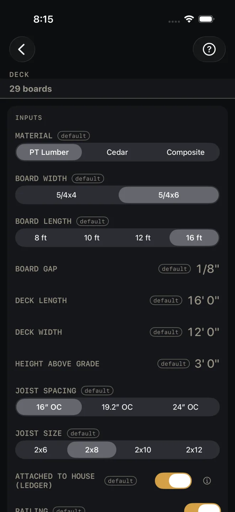
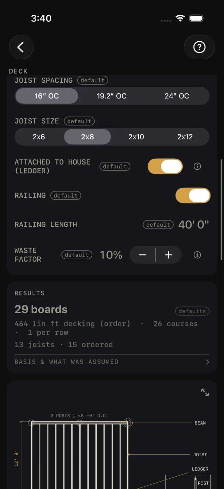
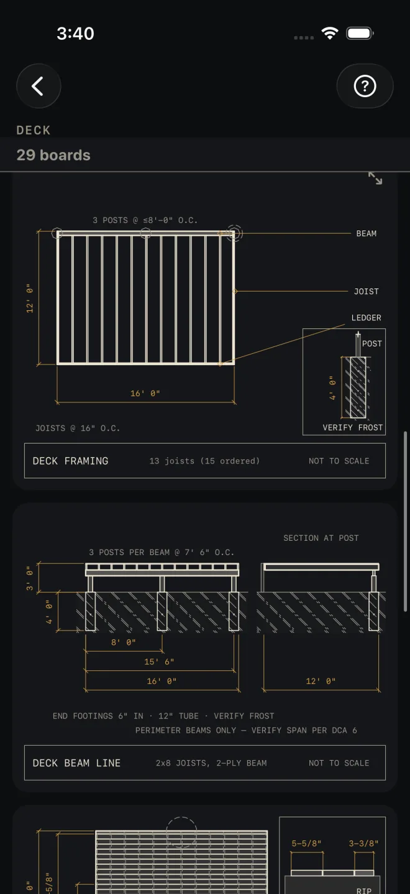

Deck
What it's for
Takes off a rectangular deck from the boards down: decking, joists, screws, posts, footing tubes, concrete, beam, ledger, hangers and railing. You get the order, three drawings — a framing plan, the beam line with its footings, and the decking layout with the rip on the last board — and a material list you can work as a cut list. It does not size the joists or the beam. The material list tells you where to verify each.
Step by step
The example is the screen as it opens: PT Lumber, 5/4x6 boards 16 ft long with a 1/8" gap, a deck 16' 0" by 12' 0" and 3' 0" above grade, 2x8 joists at 16″ OC, attached to the house, 32' 0" of railing, 10% waste.

1 2 3 4 5- Pick MATERIAL: PT Lumber, Cedar or Composite. The board widths and lengths on offer change with it. If the size you had picked is not stocked in the new material, the screen moves you to one that is.
- Pick BOARD WIDTH and BOARD LENGTH, the stock length you will buy.
- Enter BOARD GAP, the space you will leave between boards.
- Enter DECK LENGTH, along the house, and DECK WIDTH, out from the house. The decking runs the length. The joists run the width, so the width is the joist length.
- Enter HEIGHT ABOVE GRADE, from the ground to the top of the deck. It sets the post length in the material list.
- Pick JOIST SPACING (16″, 19.2″ or 24″ OC) and JOIST SIZE (2x6 to 2x12). The size names the joist, beam and ledger rows. It is not checked against the span.
- Leave ATTACHED TO HOUSE (LEDGER) on for a deck hung off the house. You get a ledger, joist hangers and one beam. Turn it off for a freestanding deck. The ledger and hangers drop out and you get two beams, with posts, footings and concrete for both.
- Leave RAILING on to buy railing, and enter RAILING LENGTH, the total run of rail around the open sides. The row is hidden when railing is off.
- Set WASTE FACTOR. It is added to the decking, joists, screws, concrete, beam and railing. Posts, footing tubes, ledger and hangers are exact counts.
Reading the results

7 8 9 10 13- The headline is decking boards to buy at your stock length, waste included. On the defaults: 29 boards.
- Decking line. On the defaults: 464 lin ft decking (order) · 26 courses · 1 per row. Courses is the number of boards across the deck width, at board width plus gap. Per row is how many stock lengths it takes to cross the deck length. More than one means butt joints.
- Joists. On the defaults: 13 joists · 15 ordered. The first number is what you lay out and hang. The second is the order, with waste.
- DECK FRAMING is the plan: ledger, joists, beam and posts, with the deck dimensioned and a footing detail marked VERIFY FROST. Pinch to zoom, drag to pan, double-tap to reset, and use the expand button for full screen. See Drawings.
- DECK BEAM LINE is an elevation along the beam and a section at a post. It dimensions the post centers along the beam, the height above grade and the footing depth. Its notes say the end footings sit in from the ends of the beam, give the tube size, and read PERIMETER BEAMS ONLY — VERIFY SPAN PER DCA 6. The beam is not sized for you.
- DECKING LAYOUT shows every course over the joists, with running dimensions from the house side. The corner detail gives the last board. On the defaults the course module is 5-5/8" and the last board is a 3-3/8" RIP. The notes spell out the module, 5-1/2" + 1/8" GAP, and whether there are butt joints.
- MATERIALS. BASIS & WHAT WAS ASSUMED states the substructure rules: posts at 8' or less along each beam, one 12" × 48" tube footing per post at about 7 bags, post stock of the height plus 12", screws 2 per joist crossing. Each material row also carries its own assumption after the dash, and this is where you check them. On the defaults: joists 12' each — verify span in Floor Joist calc; screws 350/box — 2 per joist crossing (+ splices); 6x6 posts beam bearing @ <=8' spacing; footing tubes 12" — 48" — verify local frost depth; concrete 60-lb, ~7/footing + waste; beam 2 plies — verify ply/span per code. An attached deck adds the ledger, marked flash + lag per code, and one hanger per joist.
- The buttons are at the very bottom. CUT SHEET shares a PDF of the drawing, inputs and materials, and the small list button beside it shares the material list alone. SAVE keeps the result in History. CUT LIST puts the material list on the Lock Screen as a cut list to work through. SEND LIST shares the list as a page someone else can open and tick off on their own phone, with no app.

13 14 15
16
15
16
There are no red flags on this screen. Nothing here is a pass or a fail, and that includes the joist and beam sizes.
Common mistakes
- Swapping length and width. DECK LENGTH is along the house and sets the joist count, the beam and the ledger. DECK WIDTH is out from the house and is the joist length. Check the framing plan: the joists should run the way you mean to frame them.
- Taking JOIST SIZE as approved. Nothing on this screen checks a span. The joist row sends you to Floor Joist, and the beam row and the beam line drawing both tell you to verify the beam.
- Finding a thin rip at the last board on the day. Read the corner detail on the decking layout before you start. If the rip is too narrow to fasten, change BOARD GAP a little and watch it move.
- Ordering 48" footing tubes where frost is deeper. The footing tube and concrete rows are figured on a 12" x 48" tube, and the tube row says to verify local frost depth. The post row is height above grade plus a foot, rounded up to even-foot stock. It does not change with frost depth, because the posts stand on the footings.
- Entering the deck perimeter as RAILING LENGTH on an attached deck. The house side has no rail. The row opens at 32' 0" and does not follow the deck size, so set it yourself.
Related
- Floor Joist — check the joist span
- Beam Sizing
- Stairs — the stair off the deck
- Baluster Spacing — the railing infill
- Concrete — footings by volume, as a column pour
- Drawings
- Cut sheets and templates
- Cut list, Lock Screen and widgets
- Saving and history